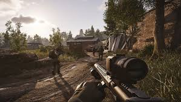
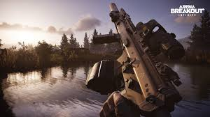

Az Arena Breakout: Infinite a véglegesen magával ragadó taktikai katonai lövöldözős játék a Steamen. Csatlakozz egy tisztességes és versengő közösséghez, hogy lőj, zsákmányolj és rohanj a szerencse felé vezető úton. Valósághű látványvilággal és élethű hanggal küzdhet át kemény csatákat, ahol nagy a tét és még nagyobb a jutalom. Lépj be, gazdagodj meg és szállj ki… de készülj fel a túlélésért való küzdelemre.
Hamarosan indul a Global Early Access, nagy felhajtással! Gondosan elkészítettünk 3 jellegzetes térképet: a Farmot, a Völgyet és a Fegyvertárat, amelyek mindegyike saját egyedi jellemzőkkel rendelkezik. A 48 fegyver közül választhat, így a játékosoknak a harci lehetőségek változatosabb skáláját kínáljuk. Ezenkívül bevezettünk egy teljesen új, valósághű klímarendszert, amely két váltakozó időjárási körülményt tartalmaz: napos és borús, és elkötelezett amellett, hogy a játékosoknak még magával ragadóbb harctéri élményt nyújtson. Regisztráljon most, és csatlakozzon ehhez a lenyűgöző csata lakomához!
Arena Breakout: Az Infinite feszegeti a stratégiai hadviselés és a taktikai tűzharcok határait. Töltsd fel és ellenőrizd kétszer a felszerelésedet – a Sötét zónában minden golyó számít. Túlélni és kivonni!
Törd meg és merülj el a Sötét Zónában. Merüljön el a kivételes részletekkel megépített világban, a valós idejű világítástól a 360°-os térbeli hangeffektusokig, amelyek minden ravaszt meghúznak. Válassza ki a felszerelést, és válassza ki a harcot. Amíg túléled, minden raid győzelem. Töltsön fel mindent, amire szüksége van, vagy maradjon könnyű a lábán. A választás a tiéd.
Módosítsa választott lőfegyverét a tökéletes fegyverkovács rendszerrel. Keverj össze és párosíts több mint 600 fegyvermódot több mint 20 rögzítőhelyen, hogy elkészítsd a tökéletes fegyveredet. Minden módosítás a valódi lőfegyver-tervezés elvein alapul, amelyek célja, hogy magával ragadóbb és hitelesebb élményt nyújtsanak a játékosoknak.
Arena Breakout: Az Infinite mindig is elkötelezett volt amellett, hogy nagyszerű QoL-szolgáltatásokat biztosítson a játékosoknak. Ebben a játékban amellett, hogy gyors felszerelési lehetőséget kínálunk, folyamatosan frissítjük és számos kényelmi funkciót adunk hozzá, beleértve a gyors gyógyulást és a killcamot, hogy biztosítsuk, hogy a játékosok teljesen belemerülhessenek ebbe a végtelen és izgalmas kalandba.
Hamarosan elérhető az Early Access. Maradjon velünk az Arena Breakout: Infinite játékkal, a kemény katonai első személyű lövöldözős játékkal PC-n! Kérjük, vegye figyelembe, hogy ez egy Early Access verzió, amely még nem véglegesítette a funkciókat. Visszajelzését az Arena Breakout: Infinite csapata dolgozza fel a játék fejlesztése, a válaszadás és/vagy támogatás és hibaelhárítás, például a technikai problémák és hibák megoldása és orvoslása érdekében.
 